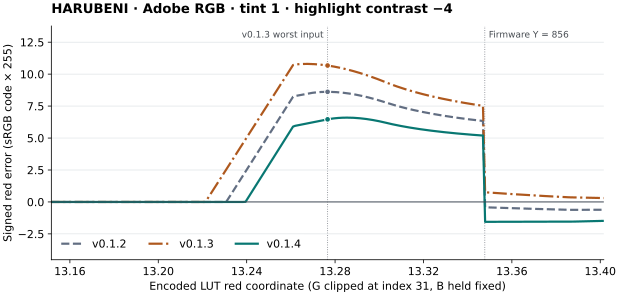

Gold 감마의 계산
Gold는 튜닝 ID 31, 출고 설정 기록 33, MakerNote ImageTone 17입니다. 출고 기록에서 하이라이트·섀도 대비는 사용 불가로 표시되지만, 원본 튜닝 함수에 두 값을 넣으면 감마 계산에 반영됩니다. 앱의 여섯 조절값은 확인한 계산 입력을 제공합니다. Gold 계산과 출고 설정 근거
- 감마 단계
0x53137564에서 기준 곡선 생성기0x53136728와 일반 감마 함수0x53135da0를 거쳐 256점의 공통 곡선을 만듭니다. 키·대비·하이라이트 대비와 부호를 바꾼 섀도 대비를 적용합니다. - 채널 곡선 준비 함수
0x531368e0는 설정+0x98=0,+0x99=1일 때 Gold를 선택합니다. 원본 조회 함수0x5313de6c가 돌려주는 R·G·B 표의 주소는 각각0x53c1557c,0x53c1598c,0x53c15d8c입니다. 공통 곡선 값 x에 대해q=x>>6,f=x&63으로 두고 각 표에서C[q] + trunc((C[q+1]−C[q])*f/64)를 계산합니다.trunc는 0 방향 절삭이며x ≥ 16320이면C[255]를 사용합니다. 네 번째 표의 값은Y=(77R+150G+29B)>>8입니다. - 최종 단계
0x53137144는0x53136f4c를 호출합니다. 채널 값 v를 sRGB에서는min(v>>4,1023)으로 줄입니다. AdobeRGB에서는0x53aa021c의 원본 조회 표를 거친 뒤 같은 양자화를 적용합니다. 공개 자료에는 각 10비트 값에 처음 도달하는 입력 값 1,024개를 담았습니다. - 인접한 10비트 값이 a, b이면
d=clamp(b−a,0,240)입니다.0x53aac900의 차분 기록 241개를 검산한 결과, 한 구간은a+floor(d*j/16)(j=0…15)으로 펼쳐집니다. 마지막 구간은d=0입니다.0x53135c60가 이 기준값과 차분을 레지스터 이미지에 기록합니다. 수치 표와 원본 주소
레지스터 이미지의 물리 채널
원본 전송 함수 0x532512cc를 에뮬레이터에서 실행해 레지스터 이미지의 오프셋과 감마 SRAM 주소를 연결했습니다. 공개 Milbeaut 헤더의 GMRFL, GMGFL, GMBFL, GMYBFL도 기준값의 물리 채널을 같은 순서로 가리킵니다. 원본 전송 검증기 · Milbeaut R2Y 헤더
| 물리 채널 | 이미지 오프셋 | SRAM 기준값 주소 | SRAM 차분 주소 | 기존 키 |
|---|---|---|---|---|
| R | 0x4768 | 0xaa00 | 0x8800 | rgb |
| G | 0x4968 | 0xac00 | 0x9000 | r |
| B | 0x4b68 | 0xae00 | 0x9800 | g |
| Yb | 0x4d68 | 0xb000 | 0xa000 | b |
기존 변환기는 레지스터에서 r, g, b를 고르므로 실제 G·B·Yb를 읽었습니다. 세 채널 곡선이 동일한 모드에서는 차이가 드러나지 않았습니다. CameraColour.from_tuning의 비교와 표 확장에 물리 R·G·B에 해당하는 키를 사용하도록 고쳤습니다. 변환기 · 서로 다른 네 곡선으로 확인하는 회귀 검사
기준 상태의 원본 ARM 코드를 다시 실행해 물리 B의 감마가 입력 0에서 sRGB 96, Adobe RGB 120을 내는 것을 확인했습니다. 두 색공간 각각에서 3×4,096개의 응답이 앱의 값과 일치했습니다. 기존 감마 함수는 0에 부호값 0을 곱해 첫 값을 잃었습니다. 입력 0에서도 표의 값을 보존하고 음수로 확장할 때만 부호를 반전하도록 고쳤습니다. 0번 응답과 전체 표 해시 · 원본 코드 검증기 · 감마 회귀 검사
확인한 상태와 원본 코드 대조
노출 이득과 분모를 각각 0x2000, 프로젝트 행을 0으로 고정했습니다. Cross 플래그는 0, Gold 플래그는 1, 설정 +0x8d와 싱글턴(0x547bbe44)의 상태 +0x33은 0입니다. 이 상태에서 앱이 사용하는 각 채널의 4,096점 곡선을 계산합니다. 기준 상태와 수치 표
원본 ARM 튜닝 루틴과 기준 상태의 계산을 306가지 조합에서 대조했습니다. sRGB와 AdobeRGB 각각에서 출고값, 조절값 여섯 개의 개별 단계, 여섯 값이 각각 양 끝에 있는 64가지 조합, 시드를 고정한 혼합 조합 40가지를 확인했습니다. 네 채널의 기준 표·차분 기록·확장 값과 CC0·YC·채도 억제 설정은 모두 일치했습니다. 별도로 채널 준비의 16비트 입력 65,536개, AdobeRGB 조회 입력 16,385개, 차분 기록 241개, 원본 패킹 134건을 검증했습니다. 원본 ARM 검증 기록
내부 상태 분기에서는 +0x33과 +0x39가 켜질 때 가중 Y를 RGB에 복사하고, +0x8d를 주면 RGB만 4096으로 바뀌는 것을 확인했습니다. +0x33에서 열리는 별도 조회 경로와 두 플래그가 켜질 때 우선 선택되는 Cross의 색 계산은 기준 모델의 범위 밖입니다. 원본 코드 대조는 전체 96 조합이나 카메라 ISP의 픽셀 실행을 포함하지 않습니다. 기준 상태와 분기 대조 범위
조색과 Gold를 XMP로 내보내는 이유
Muted, Bleach Bypass, HARUBENI의 조색은 채도 억제 뒤 Cb와 Cr에 상수를 더하므로 무채색도 물듭니다. 기존 DCP의 색조·채도 표는 채도를 곱하는 방식이라 채도가 0이면 색을 붙일 수 없습니다. 단일 톤 곡선도 Gold의 세 채널 응답을 각각 표현할 수 없습니다. 기존 DCP 구조의 제약
Firmware Color Studio v0.1.1은 공통 센서 행렬을 기준 DCP에 두고 CC0와 그 뒤의 RGB 변환을 XMP에 함께 담았습니다. v0.1.2의 v2 구조는 펌웨어 CC0를 기준 DCP로 옮깁니다. 두 구조 모두 DCP와 XMP가 한 쌍이며, 앱에서 ZIP으로 내보냅니다. Firmware Color Studio v0.1.1 · 앱의 확장 프로파일 안내
색 행렬을 앞단에 배치한 v2의 오차
펌웨어 CC0가 M, ProPhoto RGB에서 XYZ D50으로 가는 행렬이 P일 때 v2의 ForwardMatrix는 P M입니다. 프로파일 변환 직후의 수치가 M x가 되므로 Adobe의 이 단계 범위 제한이 펌웨어의 감마 앞단 범위 제한과 같은 자리에서 일어납니다. Adobe가 저장된 행렬을 읽어 10−4 단위로 반올림하고 D50으로 정규화한 뒤의 실효 행렬을 A라 하면, LUT에서 M A−1로 차이를 보정합니다. 이어 감마·YC·채도 억제·조색을 계산해 실제 ProPhoto RGB로 내보냅니다. 행렬과 Adobe SDK 근거
색공간 두 종류, 전체 모드의 기본값, 지원하는 조색과 조절값 끝점을 포함한 198개 레시피에 합성 센서 RGB 18,666,801개를 넣었습니다. 333 격자와 시드를 고정한 일반·암부 표본, CC0 클리핑 경계 양쪽의 입력을 포함합니다. 아래 표는 총 노출 0 EV에서 같은 펌웨어 기반 직접 계산을 기준으로 비교한 값입니다. 오차 단위는 정규화한 sRGB 채널의 절대차에 255를 곱한 값입니다. 레시피·입력·출력·오차 기록 · 합성 시험 재현 코드
| 색공간 | 공개 v1 평균 / 최대 | v1의 감마 0만 수정 | CC0를 옮긴 v2 |
|---|---|---|---|
| sRGB | 2.115 / 110.172 | 0.933 / 110.379 | 0.221 / 4.015 |
| Adobe RGB | 1.512 / 97.942 | 0.585 / 96.588 | 0.240 / 18.923 |
이전에 보고한 Gold Adobe RGB 한 점의 파랑 오차 59.138에는 직접 계산이 파랑의 첫 감마 값을 0으로 지운 문제가 포함돼 있었습니다. 기준을 고쳐 같은 입력을 다시 비교하니 공개 v1의 최대 채널 오차는 8.784, 감마 0만 고친 v1은 1.859, v2는 1.072였습니다. 해당 입력과 세 계산의 비교
LUT는 323 격자, 16비트, sRGB 전달함수와 사면체 보간을 사용합니다. v2 오차가 가장 큰 표본은 Muted Adobe RGB의 조색 1·키 −4였으며, 최종 sRGB 범위 경계에서 빨강이 29.481만큼 달랐습니다. 이는 합성 표본에서 관측한 최대값입니다. Adobe 앱에서의 실제 RAW 현상과 펌웨어의 모든 설정 조합은 별도 검증 대상입니다. 격자·오차의 검증 범위
앱에서 만든 v2 Gold 두 색공간, 녹색 조색 Bleach Bypass, HARUBENI 조색 0…8을 Lightroom Classic 16.0에서 선택하고 16비트 sRGB TIFF로 내보냈습니다. 12개 결과의 LUT 식별자와 짝 DCP를 확인했습니다. 사진은 검증에만 사용했으며 LUT나 공식의 fitting에는 사용하지 않았습니다. 같은 촬영의 PEF와 Adobe 변환 DNG로 확인한 미리보기 차이는 앱의 별도 보고서에 기록했습니다. 실제 Lightroom 검증 기록 · PEF 처리 차이
32³ 격자 사이의 오차를 줄이는 v3
v3는 직접 계산한 격자점으로 시작해 사면체 보간이 쓰는 일곱 방향 모서리의 중점에서 오차를 구합니다. 이 오차를 양 끝 표본에 나누어 반영하는 과정을 네 번 반복합니다. 경계면의 표본에는 면 안의 모서리만 반영합니다. LUT 입방체의 열두 바깥 모서리와 세 인덱스가 같은 중립 대각선은 매 반복에서 고정합니다. 내보낸 표는 32³, 채널당 16비트이며 기존 DCP 행렬 및 ProPhoto RGB·sRGB 전달함수를 사용합니다. 앱의 LUT 생성 코드 · Adobe Profiles SDK 및 DNG SDK
v0.1.2 태그의 소스와 v3를 각각 불러와 기존 레시피 198개와 총 노출 −2, −1, +0.5, +1 EV의 32개 조건을 비교했습니다. 직접 계산에는 앱의 원래 펌웨어 색 모델과 CC0를 사용하고 직렬화 행렬의 반올림이나 LUT 보간은 적용하지 않았습니다. 노출은 Adobe SDK의 순서를 따라 CC0 좌표에서 감마 앞에 적용했습니다. 이 노출 시험은 프로파일의 처리 순서를 검증합니다. 비교 기준 소스 · 소스 해시와 전 조건 수치 · 재현 코드
재검증에는 별도 시드의 암부·일반 입력, CC0 경계, 최종 선형 sRGB가 0 또는 1을 지나는 지점 양쪽을 추가했습니다. 같은 값으로 제한되는 구간의 시작점은 별도 집계했습니다. 회색축 257점과 센서 RGB 입방체의 여덟 꼭짓점도 확인했습니다. 선형 ProPhoto RGB와 출력 sRGB 모두에서 채널 절대 오차에 255를 곱했습니다. Adobe RGB 레시피에서는 직접 계산의 선형 sRGB가 0 또는 1에서 1/255보다 멀리 벗어난 입력을 찾고, LUT 출력도 같은 채널의 같은 쪽에 남는지 확인했습니다. 조건별 경계 및 색역 기록
| 표본과 노출 | 측정 색공간 | v0.1.2 p95 / p99 / 최대 | v3 p95 / p99 / 최대 |
|---|---|---|---|
| 기존 0 EV | 출력 sRGB | 1.232 / 2.938 / 29.481 | 1.008 / 2.749 / 27.990 |
| 독립 0 EV | 출력 sRGB | 1.186 / 3.229 / 24.059 | 0.983 / 2.851 / 19.720 |
| 기존 0 EV | 선형 ProPhoto RGB | 1.654 / 4.362 / 22.468 | 1.415 / 4.538 / 19.956 |
| 독립 0 EV | 선형 ProPhoto RGB | 1.556 / 4.883 / 22.480 | 1.328 / 4.707 / 20.090 |
| 기존 0 EV 밖 | 출력 sRGB | 0.815 / 1.599 / 15.650 | 0.679 / 1.321 / 13.747 |
| 독립 0 EV 밖 | 출력 sRGB | 0.802 / 1.730 / 16.490 | 0.694 / 1.432 / 13.853 |
| 기존 0 EV 밖 | 선형 ProPhoto RGB | 0.911 / 1.962 / 7.512 | 0.766 / 1.639 / 6.235 |
| 독립 0 EV 밖 | 선형 ProPhoto RGB | 0.856 / 1.831 / 7.111 | 0.743 / 1.540 / 6.212 |
0 EV의 기존 표본에서 10개 레시피, 독립 표본에서 9개 레시피는 출력 sRGB 최대 오차가 0.01보다 더 커졌습니다. 가장 큰 증가는 각각 2.045와 1.890입니다. 기존 표본의 선형 ProPhoto RGB p99 최댓값도 4.362에서 4.538로 증가했습니다. 독립 표본의 출력 경계 교차 83,684개에서는 최대 오차가 24.059에서 19.720으로, 별도로 집계한 클리핑 구간 시작점 주변 65,140개에서는 11.601에서 10.061로 줄었습니다. 198개 레시피에서 고정한 LUT 표본의 16비트 값은 모두 일치했습니다. 센서에서 회색축으로 들어온 입력의 최대 오차도 같았습니다. 개별 레시피 오차와 고정 표본 검사
기존 0 EV 표본에서 Adobe RGB에 속하면서 sRGB 범위를 벗어나는 2,217,821개 중 같은 채널의 같은 쪽에 남은 수는 2,212,386개에서 2,214,217개로 증가했습니다. 1,852개가 새로 이 조건을 충족했고 21개는 기존에 충족했던 조건에서 벗어났습니다. 이 21개의 직접 계산에서 sRGB 범위를 넘은 폭은 최대 1.719/255였습니다. 독립 0 EV 표본에서는 296개가 새로 충족했고 5개는 충족하지 못했습니다. Adobe RGB 색역 경계 검사
Lightroom Classic 16.0에서는 데모 DNG에 Gold Adobe RGB, Muted Adobe RGB(키 −4·조색 1), Bleach Bypass sRGB(조색 1)를 적용해 16비트 sRGB TIFF 세 건을 내보냈습니다. 각 TIFF의 내장 XMP에서 짝 DCP와 RGB 표의 식별자가 생성한 프로파일과 일치함을 확인했습니다. Lightroom TIFF 세 건의 프로파일 식별자와 내보내기 검증
위 합성 RGB 비교를 재현하려면 v0.1.2 태그를 가진 앱 Git 체크아웃과 앱의 Python 환경이 필요합니다. 사진 없이 실행할 수 있습니다. 레시피별 분위수, 최대 오차 입력과 출력
& "PATH_TO_APP/.venv/Scripts/python.exe" -B tools/check_lut_boundary_v3.py --app-repo "PATH_TO_APP" --output lut-v3-check.jsonv4 보간과 기존 최대 오차 사례
v4는 v3의 32³ 표에서 시작합니다. 이웃 정점의 휘도 범위가 실제 채도 이득 단차를 포함하고, 그 주변에 선형 sRGB 채널이 0.0031308 이하인 색이 있을 때 보정 대상으로 삼습니다. 표의 정점과 모서리 중점에서 출력 sRGB 오차가 2/255를 넘는 셀 중 보정 대상과 맞닿은 셀을 1/4 셀 간격으로 다시 평가합니다. 이때 sRGB 전달함수를 범위 밖에서도 부호를 유지해 계산하고, 정점에는 계산된 보정의 절반을 반영합니다. v4 LUT 생성 코드
v0.1.2와 v0.1.3 태그를 별도 소스 트리에서 불러와, 기존 198개 레시피와 32개 노출 조건의 공개 통계를 다시 계산했습니다. 0 EV에서 이전 연구의 기존 표본 18,666,801개와 독립 표본 3,889,597개에 같은 입력과 직접 계산을 기준으로 v4를 비교했습니다. 후보 설계에 쓰지 않은 새 시드의 전체 영역·암부 표본 2,027,520개와 HARUBENI 최악점 주변의 국소 표본은 별도로 집계했습니다. 오차는 채널 차이에 255를 곱한 값입니다. v0.1.2 소스 · v0.1.3 소스 · 태그·소스 해시와 조건별 검증 수치
| 표본 | v0.1.2 | v0.1.3 | v4 |
|---|---|---|---|
| 기존 18,666,801개 | 1.232 / 2.938 / 29.481 | 1.008 / 2.749 / 27.990 | 1.008 / 2.749 / 27.990 |
| 독립 3,889,597개 | 1.186 / 3.229 / 24.059 | 0.983 / 2.851 / 19.720 | 0.983 / 2.841 / 18.633 |
| 독립 표본 중 출력 경계 교차 83,684개 | 8.623 / 14.774 / 24.059 | 7.430 / 8.496 / 19.720 | 7.430 / 8.270 / 18.392 |
| 새 시드 2,027,520개 | 1.167 / 2.563 / 19.097 | 0.954 / 2.329 / 14.672 | 0.953 / 2.329 / 13.033 |
기존 0 EV 표본에서 v0.1.3보다 최대 오차가 0.01 이상 크게 증가한 레시피는 세 개였습니다. Gold Adobe RGB의 하이라이트 대비 +4가 10.588에서 11.048, 여섯 값이 −4와 +4를 교대로 취하는 조합이 14.818에서 15.006, Bleach Bypass Adobe RGB의 조색 1·섀도 대비 +4가 7.013에서 7.159였습니다. 같은 기준으로 독립 표본에서는 11개, 새 시드에서는 4개 레시피의 최대 오차가 커졌습니다. 0 EV의 선형 ProPhoto RGB에서는 세 표본의 p95·p99·최대 오차 최댓값은 v0.1.3과 같았으며, 새 시드에서 18개 레시피의 최대 오차가 0.01보다 더 커졌습니다. 0 EV 외의 32개 노출 조건에서 출력 sRGB 최대 오차는 기존 표본에서 13.747에서 11.787, 독립 표본에서 13.853에서 11.062로 줄었습니다. 개별 레시피의 오차 변화와 노출 조건
세 버전에서 198개 레시피의 짝 DCP 바이트가 일치했습니다. 표의 바깥 열두 모서리 368점과 중립 대각선 32점에서도 채널당 16비트 값이 일치했습니다. v0.1.3과 비교한 Adobe RGB 색역 경계 판정은 기존 0 EV 표본에서 4개가 새로 조건을 충족하고 2개가 충족하지 못했습니다. 이 두 입력의 직접 계산에서 선형 sRGB 범위를 벗어난 거리는 최대 1.638/255였습니다. 독립 표본에서는 5개가 새로 충족하고, 새 시드에서는 판정이 같았습니다. DCP·LUT 고정점과 색역 경계 판정
v0.1.3에서 기존 표본의 최대 오차가 0.01보다 더 커진 10개 레시피는 두 태그와 v4의 최악점 좌표에서 세 버전을 각각 실행했습니다. 10개 중 6개는 두 태그의 최악점 좌표가 달랐습니다. 센서 RGB, 선형 sRGB와 ProPhoto, 출력 sRGB의 부호 있는 오차, 사면체의 정점과 가중치를 기록했습니다. HARUBENI에서는 최악점을 제외하고 LUT 좌표의 자유축 방향으로 셀 폭의 1/8과 1/4만큼 이동한 입력을 추가했습니다. 같은 좌표에서의 부호 있는 오차와 단계별 수치
| 레시피 | v0.1.2 | v0.1.3 | v4 |
|---|---|---|---|
| Vibrant Adobe RGB, 기본값 | 9.687 | 9.703 | 8.246 |
| HARUBENI Adobe RGB, 조색 4 | 12.429 | 12.882 | 9.239 |
| HARUBENI Adobe RGB, 조색 5 | 10.480 | 11.254 | 9.140 |
| FUYUNO sRGB, 기본값 | 2.571 | 2.626 | 2.310 |
| Gold Adobe RGB, +4·−4·+4·−4·+4·−4 | 10.496 | 10.699 | 10.170 |
| HARUBENI Adobe RGB, 조색 1·키 −4 | 12.196 | 12.291 | 10.111 |
| HARUBENI Adobe RGB, 조색 1·키 +4 | 11.619 | 12.579 | 9.022 |
| HARUBENI Adobe RGB, 조색 1·대비 −4 | 11.782 | 12.950 | 11.127 |
| HARUBENI Adobe RGB, 조색 1·하이라이트 대비 −4 | 8.629 | 10.674 | 6.462 |
| HARUBENI Adobe RGB, 조색 8·여섯 조절값 모두 +4 | 9.653 | 10.614 | 7.854 |
Gold의 혼합 설정은 채도, 색조, 키, 대비, 하이라이트 대비, 섀도 대비 순입니다. 레시피별 전체 설정과 독립 표본 결과
v0.1.3의 최악점에서는 HARUBENI 조색 4·5를 포함한 6개 사례의 가장 큰 단계별 변화가 채도 억제 상단 경계 856과 이어졌습니다. 2개 사례는 암부 경계 56과 이어졌습니다. HARUBENI 조색 1·키 −4에서는 감마 단계의 변화가 가장 컸습니다. HARUBENI 조색 8·조절값 6개 모두 +4에서는 v0.1.3의 최악점에 v0.1.2를 적용한 빨강 오차가 +0.453, 같은 입력에서 v0.1.3의 오차가 −10.614였습니다. 사면체의 정점은 이웃 셀도 함께 쓰므로, 보정이 적용된 노드와 최악점에서 관측된 단계별 변화는 서로 다른 범위를 설명합니다. 10개 사례의 설정과 단계별 변화
v0.1.3에서 최대 오차 증가가 가장 컸던 HARUBENI Adobe RGB(조색 1·하이라이트 대비 −4)는 두 태그의 최악점 좌표가 달랐습니다. v0.1.3의 좌표에서 보간에 실제로 기여한 정점의 휘도는 850.892~867.233으로 채도 억제 경계 856을 사이에 뒀습니다. v0.1.2의 좌표에서는 실제 기여 정점이 856.598~872.964에 있었습니다. 연속 색 계산의 어느 단계에서 보간하는지만 바꿔 비교했을 때, v0.1.3 좌표의 빨강은 채도 억제 단계에서 +10.424, v0.1.2 좌표에서는 감마 단계에서 −10.852만큼 변했습니다. 이 값은 해당 좌표와 계산 순서에서 관측한 변화량입니다. HARUBENI 정점·감마·채도 억제 추적
v0.1.3의 최악점 좌표에서 빨강 오차는 v0.1.2에서 +8.615, v0.1.3에서 +10.674, v4에서 +6.462였습니다. v0.1.2의 최악점 좌표에서는 각각 −8.629, −7.384, −6.130이었습니다. 두 좌표의 실제 출력과 기준 출력


태그 두 개를 포함한 앱 Git 체크아웃과 앱의 Python 환경으로 검증을 다시 실행할 수 있습니다. v4 합성 RGB 검증 코드
& "PATH_TO_APP/.venv/Scripts/python.exe" -B tools/check_lut_boundary_v4.py --app-repo "PATH_TO_APP" --output lut-v4-check.json자료와 재현
아래 두 JSON은 Firmware Color Studio v0.1.1의 공개 파일과 SHA-256이 같습니다. 수치 표와 검증 결과를 담고 있으며 재현 검증에는 사용자가 준비한 2.20 펌웨어 사본이 필요합니다. 실행 방법 · 원본 ARM 검증기 · 앱 계산 코드
- Gold R·G·B 표와 AdobeRGB 임계값 · gold-tables.json
f0a5e752f901fd40528cd610075b36d4e3dd11956d61ccf720649633a29c9776 - 원본 ARM 실행 조건, 비교 결과, 대조 해시 · gold-verification.json
e4099106293d00a157386070f8cde462bff5ee7c000a4f2ba719b967ac55922c
아래 명령은 위 오차 기록의 소스 해시와 일치하는 v2 앱 체크아웃과 Python 환경을 사용합니다. 두 번째 명령은 Unicorn과 사용자가 준비한 디코딩 이미지가 필요하며 이 저장소의 고정 튜닝 하네스를 사용합니다. 합성 RGB 검사 · 원본 ARM 검사
python -B tools/check_gold_lut_fidelity.py --app-repo /path/to/firmware-color-studio --output gold-lut-check.json
python -B tools/verify_gold_gamma_zero.py /path/to/decoded.bin --app-repo /path/to/firmware-color-studio --output gold-gamma-zero-check.json